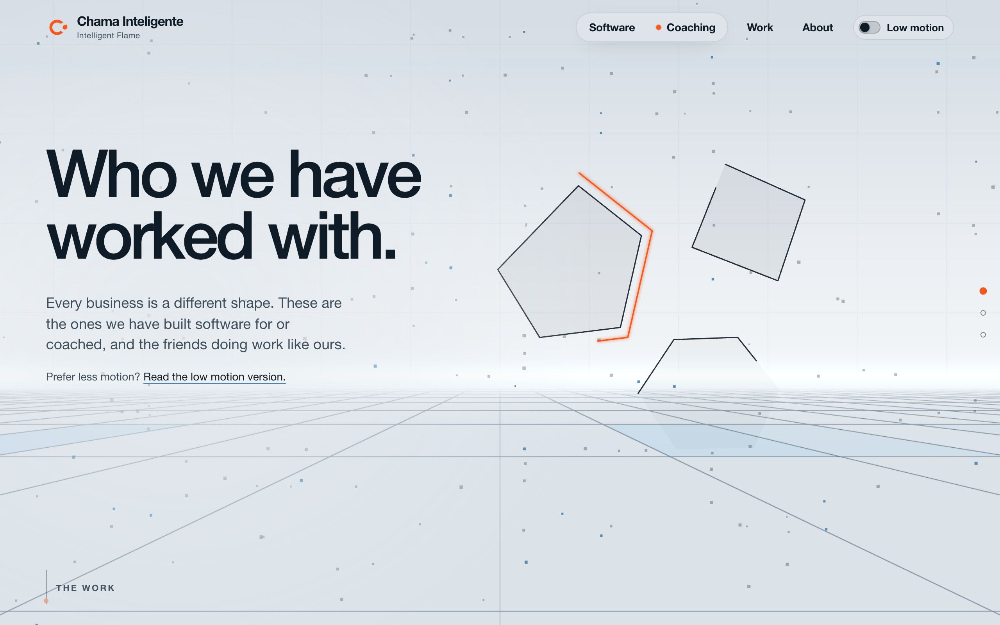
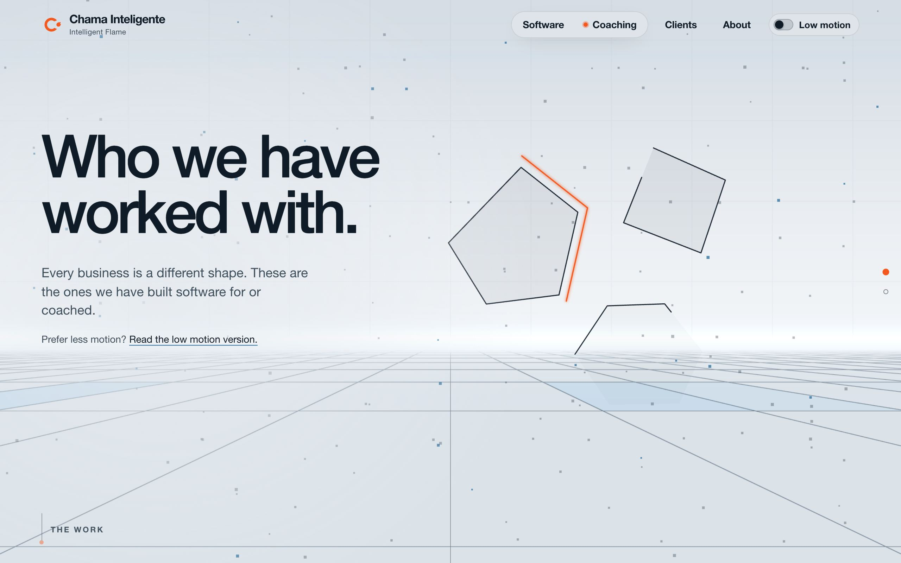
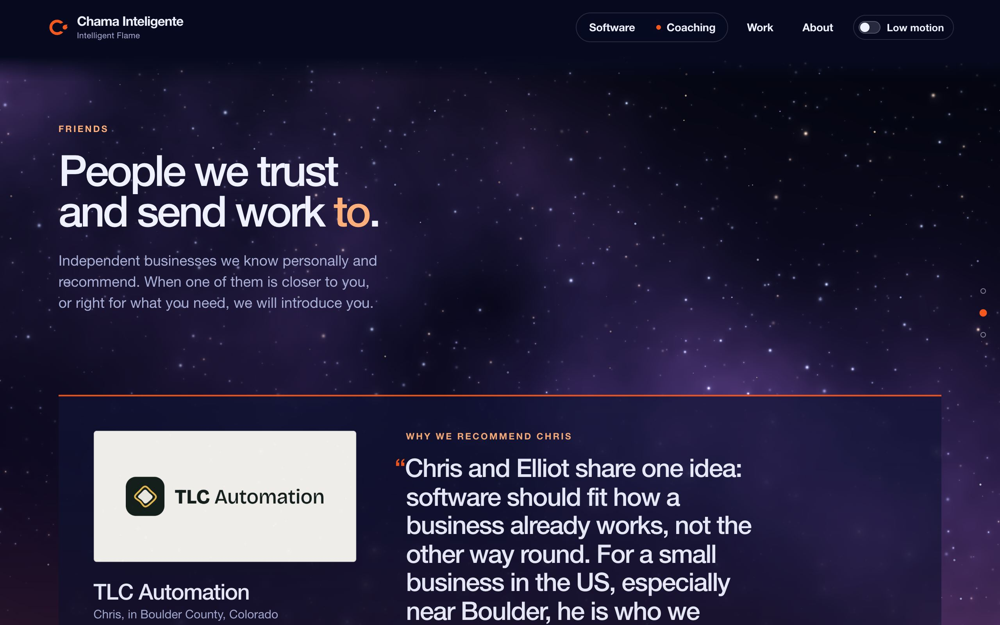
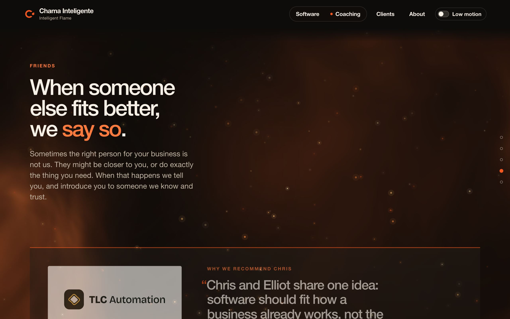
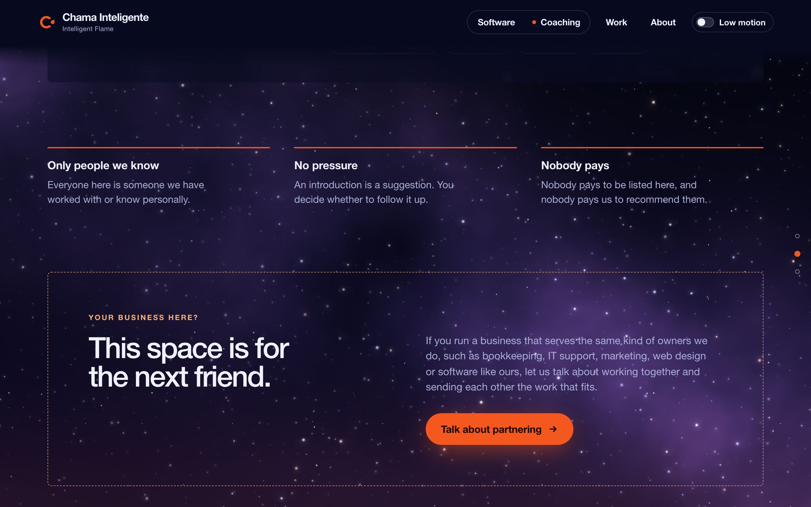
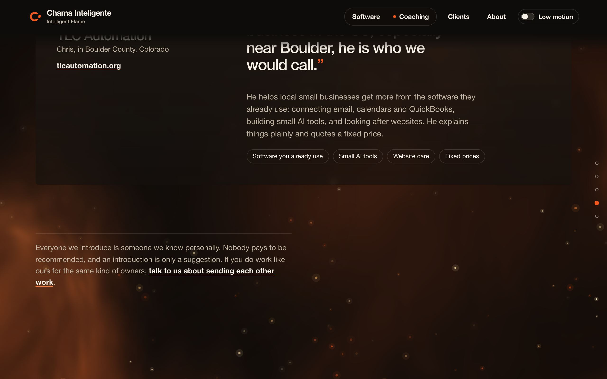
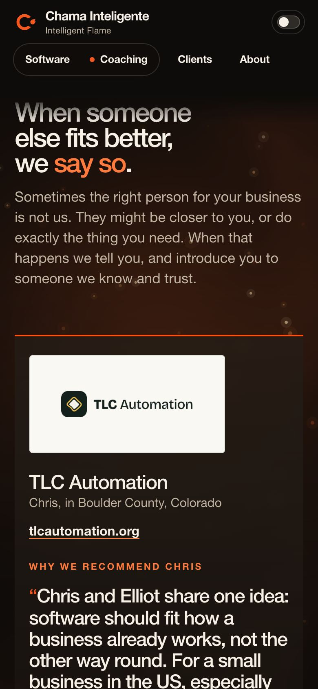

/work is now /clients and only shows clients. Friends moved to About as something we do: when someone else fits better, we say so.
Before: /work

Now: /clients

Before: a directory on /work

Now: a section of /about

Before: rules and an empty slot

Now: one quiet line

The hero rows on Software and Coaching now say Friends we recommend and open About at Chris.
/work, /work#springlar and /simple/work land on the new pages.
llms.txt, llms-full.txt, sitemap, README, the site skill and the brain's wiki are updated. IndexNow was sent the new addresses.
No new claims. Every line restates what the old Friends section said.
